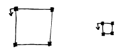
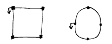
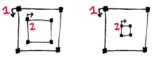
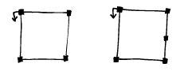
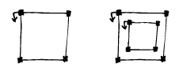
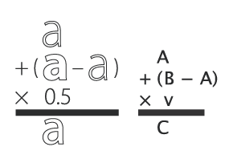

Scripting for interpolation


Interpolation
In this session we're going to look at scripting and interpolation. Building an interpolation system has 2 phases: preparing it and using it. Though this isn't necessarily a design / production difference. In the first phase you need to make sure all the data is set up properly, the compatible glyphs in each master, matching contours in each glyph, path directions, start point locations etc. This can be a lot of work, but RoboFab can assist by reporting the problems. The second phase, using the interpolation comes when everything works and rather than look for problems (there shouldn't be any) you just want to generate all the weights as fast as possible and get on with it proofing and other things.
Terminology
The glyphs (or whole fonts) that are used in an interpolation system are usually called masters. The interpolation factor is a number between 0 and 1. With factor = 0 the result will be identical to the first master (in this case glyph "A"), and as you can probably guess, with factor = 1 the result will match glyph "B". Factor =0.5 means the resulting shape will be exactly between the two masters. The factor can actually also be outside the 0, 1 range - in that case we speak of extrapolation. The particular change in a glyph when interpolating from one master to another is called an axis.
Why use RoboFab interpolation?
All the alternatives come with strings attached. FontLab's Blend tool forces points in contours which don't match. This is handy if you're looking for a quick fix, but it can more or less destroy your masters. Alternatively you can use the Multiple Master tools, but this requires all of your masters to be in the same file and drawing this way can be tricky. Since interpolation is a useful process in typedesign, and a good candidate for scripting we decided to include solid interpolation support in Robofab.
Interpolating glyphs
In the first example we're going to interpolate two glyphs in the same font. This can be useful in the design stage, for sketching or testing. The result is stored in a third glyph. Note: if you want to run this example in FontLab, open a new, empty font. Use the circle tool to draw one circle in "A", and again in "B". Make sure these are different enough to tell what's going on.
# robothon06
# interpolate two glyphs in the same font
from robofab.world import CurrentFont
f = CurrentFont()
factor = 0.5
f["C"].interpolate(factor, f["A"], f["B"])
f["C"].update()
You see there are 3 glyphs involved: the two masters ("A" and "B") and a new glyph which is used to store the results. In this case the new glyph is stored as "C", but it can be helpful to give it a more descriptive name. This is not very PostScript-like, but chances are these glyphs won't make it to production anyway, so it's not a problem. Notice that interpolate() is a method of the Glyph object. The Font object has an interpolate method as well, more about that later. The obligatory link to the relevant RoboFab documentation.
Here's the same script, but now it generates a range of interpolated glyphs, each with a better name which tells you which interpolation factor was used:
# robothon06
# interpolate two glyphs in the same font a bunch of times
from robofab.world import CurrentFont
f = CurrentFont()
for i in range(0, 10):
factor = i*.1
name = "result_%f"%factor
print "interpolating", name
f[name].interpolate(factor, f["A"], f["B"])
f.update()
interpolating result_0.000000
interpolating result_0.100000
interpolating result_0.200000
interpolating result_0.300000
interpolating result_0.400000
interpolating result_0.500000
interpolating result_0.600000
interpolating result_0.700000
interpolating result_0.800000
interpolating result_0.900000

Here you see a range of resulting glyphs as they could be generated by the script above.
Rounding errors
When you interpolate in FontLab you need to take into account that the results will be rounded off. Coordinates can only consist of whole numbers, i,e, "101" or "102" but not "101.3290" There is a nice solution for working with floating point precision glyphs using RoboFab. Here's a brief introduction:
# robothon06
from robofab.world import CurrentFont
# We need to import a class with a different
# implementation for the glyph object.
# It looks a bit odd, but this is how it is done
from robofab.objects.objectsRF import RGlyph as _RGlyph
f = CurrentFont()
# pick two compatible glyphs as masters
m1 = f["A"]
m2 = f["B"]
# make a new glyph object from this other glyph class
g = _RGlyph()
# interpolation factor which is bound to make floats
oddFactor = 0.2382345
# go!
g.interpolate(oddFactor, m1, m2)
# let's have a look at the raw results
for contour in g:
for pt in contour.points:
print "float", pt.x, pt.y
# a glyph can round itself off:
g.round()
# and then it looks like integers again
for contour in g:
for pt in contour.points:
print "integer", pt.x, pt.y
�
float glyph 285.07676 114.59806
float glyph 641.51202 285.66048
float glyph 452.009385 679.5407
float glyph 95.96647 508.47828
integer glyph 285 115
integer glyph 642 286
integer glyph 452 680
integer glyph 96 508
Use font.insertGlyph(myOrphanFloatGlyph, as="someName") if you want to insert the glyph back into a real font. Inserting causes the glyph points to be rounded off again. In a similar way you can make a font object which does not refer to an open FontLab font. In such a font you can store intermediate floating point glyphs of interpolations.
Making it work
The following table shows the problems glyphs can have when interpolating. Compatible means that the data can interpolate. Functioning means that the result actually works as a glyph. You'll see there are several combinations where glyphs are compatible, but the interpolation is not functional.
| masters | result | fix |
|  | Compatible and functioning. Same number of points, same direction, same start point location. | - |
|  | Unusual, but compatible and functioning. The number of off-curve points differ, but these are assumed to be on top of the on-curve when missing. Note: this only works for segments with 2 off-curve points. | - |
|  | Compatible and functioning. Same number of points, same direction, same start point location, same contour order. | - |
|  | Incompatible and not functioning: different number of points | Edit the masters. |

|
Compatible but not functioning: start point is in the wrong place. | apply c.autoStartSegment() on each contour, otherwise edit the masters. |
|  | Incompatible and not functioning: different number of contours | Edit the masters. |

|
Compatible but not functioning: one of the contours is turning in the wrong direction. | apply glyph.correctDirection(), otherwise edit the masters. |

|
Compatible but not functioning. Contour order: the paths are in the wrong order. | apply glyph.autoContourOrder(), otherwise edit the masters. |
Here are some snippets which can help prepare your glyphs. Suppose your test font has two incompatible glyphs "A" and "B".
# see if "A" and "B" can interpolate
from robofab.world import CurrentFont
f = CurrentFont()
a = f["a"]
print a.isCompatible(f["b"], False)
FalseSo, there's the answer in code, they can't interpolate. Suppose the glyphs were in fact compatible, the answer will read True. The isCompatible() method takes another parameter,
# see if "A" and "B" can interpolate
# and find out what's wrong if you can
from robofab.world import CurrentFont
f = CurrentFont()
a = f["a"]
print a.isCompatible(f["b"], True)
(False, ["Fatal error: contour 1 in glyph A and glyph B
don't have the same number of segments."])
Apart from the stunted grammar, this will tell you more or less what's wrong with the two glyphs. Now you have something to fix. Another frequently found error is this:
(False, ["Fatal error: glyph A and glyph B
don't have the same number of contours."])
More subtle errors happen when one of the contours in one of the masters turns in the wrong direction, or the start point of the contour is in a different place. These won't trip incompatibility errors like ones above, you have to verify the results.
The following example shows methods which can help to make glyph more compatible. These methods use rules to arrange the starting point, the order of the contours and the direction of the contours. It is likely, but not garanteed, that other masters of your interpolation will respond the same way to these rules. For instance, autoStartSegment() moves the starting point of a contour to the most, bottom left point on the contour. If all your masters share the same structure, this will make sense. But if the masters are radically different on purpose, these rules won't produce the right results and you have to prepare the glyphs manually.
# robothon06
# prepare glyph for interpolation
# move startpoints
# fix directions
# fix contour order
from robofab.world import CurrentFont
f = CurrentFont()
glyph = f["A"]
glyph.autoContourOrder()
glyph.correctDirection()
for c in glyph.contours:
c.autoStartSegment()
glyph.update()
Interpolating fonts
The following script interpolates two fonts and stores the results in a third. It also smoothly introduces a couple of simple user interface thingies: AskString and SelectFont. Have a look at the how to page on the simple dialogs stuff. AskString() presents a small dialogbox with a prompt and a text input box. It will return the value you typed in, or None if you didn't. Which kinda implies you need to check whether the input makes sense before continuing, but that's a different project. SelectFont() gives you simple dialog with a list of the currently open fonts. When you select a fontname, the object for that font is returned. If you don't select anything, None is returned.
# robothon06
# interpolate two fonts
from robofab.world import SelectFont, NewFont
from robofab.interface.all.dialogs import AskString
font1 = SelectFont("Select font 1")
font2 = SelectFont("Select font 2")
value = AskString("What percentage?")
value = int(value) * .01
destination = NewFont()
# this interpolates the glyphs
destination.interpolate(value, font1, font2, doProgress=True)
# this interpolates the kerning
# comment this line out of you're just testing
destination.kerning.interpolate(font1.kerning, font2.kerning, value)
destination.update()
This script asks you to select 2 fonts, then it asks you for an interpolation factor. Then is creates a new font (in FontLab a new empty font window will pop up). Then the font.interpolate() method of this new font is called with the interpolation factor you entered before, and the two fonts you selected.
Interpolate Kerning
In the example above the kerning is interpolated seperately, the Kerning object has its own interpolate() method. When a kernpair exists in both masters, the resulting pair will be the expected interpolated value. If a pair is missing from one, the interpolation will assume it has value 0. This only works for flat, non-class kerning. Interpolating class based kerning with exceptions requires more attention. Some Robofab developers have this working though.
GlyphMath (aside 1)
If they're compatible, Robofab Glyph objects can be used in Python math expression: you can add, subtract, multiply and divide them like normal numbers or variables. The math is applied to the coordinates of each point in the glyph. The result of a glyphMath operation is a new glyph. You can then insert this glyph in a font, or use it for other math operations.
| GlyphMath | operation |

| addition: the coordinates of each point are added |

| subtraction: the coordinates of each point are subtracted. Note that though the glyph looks unrecognisable, all points are still there. Literally the difference between the two glyphs. |

| multiplication: scaling the glyph up. When you multiply with a tuple like (1.3, 1.05) the first value is used to multiply the x coordinates, the second value is used for the y coordinates. |

| division: scaling the glyph down. When you divide with a tuple like (30, 29) the first value is used to divide the x coordinates, the second value is used for the y coordinates. |
|  | Combination of operations to make a real interpolation. |
# glyphmath example, using glyphs in math
# in the test font: two interpolatable, different glyphs
# on positions A and B.
from robofab.world import CurrentFont
f = CurrentFont()
# glyphmath
a = f["A"]
b = f["B"]
# multiply works as scaling up
d = a * 2
#or
d = 2 * a
f.insertGlyph(d, as="A.A_times_2")
# division works as scaling down
d = a / 2
f.insertGlyph(d, as="A.A_divide_2")
# addition: add coordinates of each point
d = a + b
f.insertGlyph(d, as="A.A_plus_B")
# subtraction: subtract coordinates of each point
d = a - b
f.insertGlyph(d, as="A.A_minus_B")
# combination: interpolation!
d = a + .5 * (b-a)
f.insertGlyph(d, as="A.A_interpolate_B")
f.update()
You can use GlyphMath to create interpolation effects, transplant transformations from one glyph to another and superimpose several effects at once.
Superpolation (aside 2)
Shameless commercial: Superpolator is a tool for building complex interpolation systems. It's based on Robofab and doesn't really have a place in this presentation. It doesn't make complex interpolations easier, it makes them possible. But ask Erik afterwards.
Advanced Interpolation
Here are two more advanced examples of interpolation. The first script asks for two master fonts. Then it will generate a list of weights with predefined names and factors. After interpolating, it will close the result font and continue with the next weigt.
# robothon06
# interpolate two fonts with a series of factors.
# for each factor create a new font file.
from robofab.world import SelectFont, NewFont
from robofab.interface.all.dialogs import AskString, GetFolder
import os
font1 = SelectFont("Select font 1")
font2 = SelectFont("Select font 2")
where = GetFolder("Select a folder to save the interpolations")
instances = [ ("Light", 0),
("NotTooLight", .25),
("Regular", .5),
("Demi", .75),
("Medium", 1),
]
for thing in instances:
name, value = thing
print "generating", name, value
dst = NewFont()
# this interpolates the glyphs
dst.interpolate(value, font1, font2, doProgress=True)
# this interpolates the kerning
# comment this line out of you're just testing
#dst.kerning.interpolate(font1.kerning, font2.kerning, value)
dst.info.familyName = "MyBigFamily"
dst.info.styleName = name
dst.info.autoNaming()
dst.update()
fileName = dst.info.familyName + "-" + dst.info.styleName + ".vfb"
path = os.path.join(where, fileName)
print 'saving at', path
dst.save(path)
dst.close()
The next script is a bit tricky, but it can be useful tool in typedesign. Suppose you have a two interpolating masters of different weights. The script interpolates in horizontal direction with the heavy weight to increase the stem thickness of the glyph. Then it proceeds to horizontally scale the glyph in such a way that the increase of weight from the interpolation is reduced again. The effect of both operations is a condensed version of the original glyph, but with a comparable stem thickness as the original. If you measure the stems of both masters and enter the values in the script, it can calculate an exact match. Note that the success of this script depends on the quality of the interpolation, and how far you're pushing the limit. From a design point of view you might not even want the condensed to have the same stem thickness. This script won't produce ready-made condensed versions of your typeface, but it can be used to create a starting point for further editing.
# robothon06
# Get started with a condensed if you have a regular and a bold:
# seperate x, y interpolation to make stems fatter
# then scaling to reduce width
# stems will get their original thickness
from robofab.world import CurrentFont
f = CurrentFont()
# these are measurements you have to take
# from your font. The width of a stem.
lightStem = 106
fatStem = 200
for i in range(0, 10):
factor = (i*.1, 0)
print factor
name = "result_%f"%factor[0]
scale = float(41)/(41 + factor[0]*(116-41))
print scale
f[name].interpolate(factor, f["A"], f["B"])
f[name].scale((scale, 1))
f[name].leftMargin = f["A"].leftMargin
f[name].rightMargin = f["A"].rightMargin
f.update()�